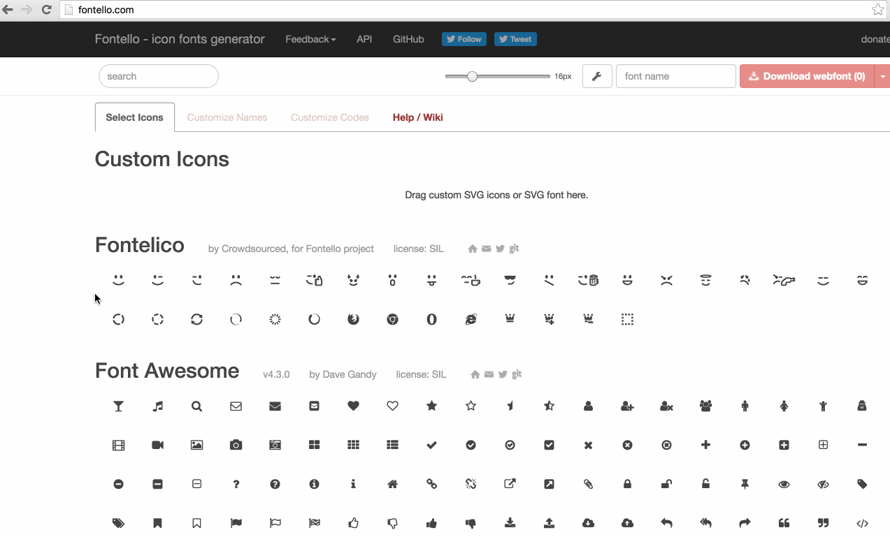
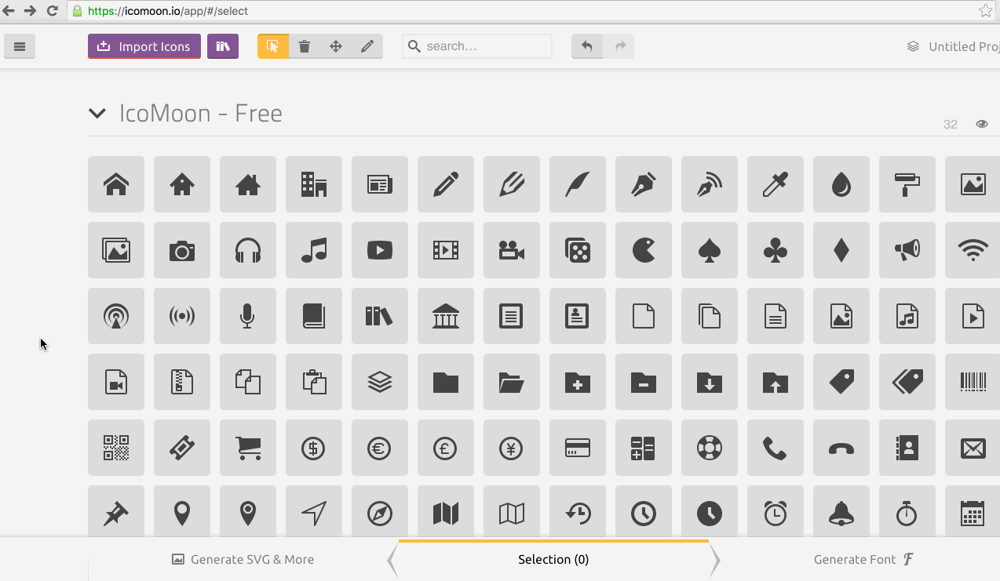
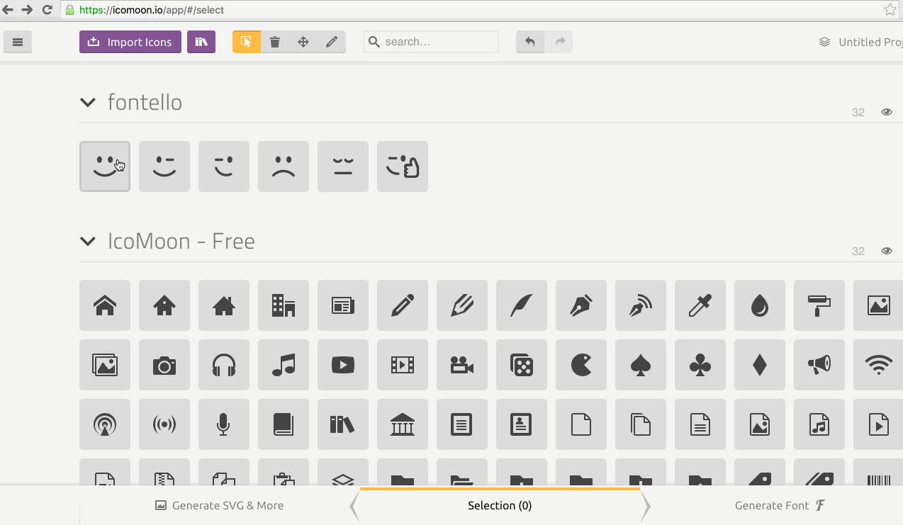
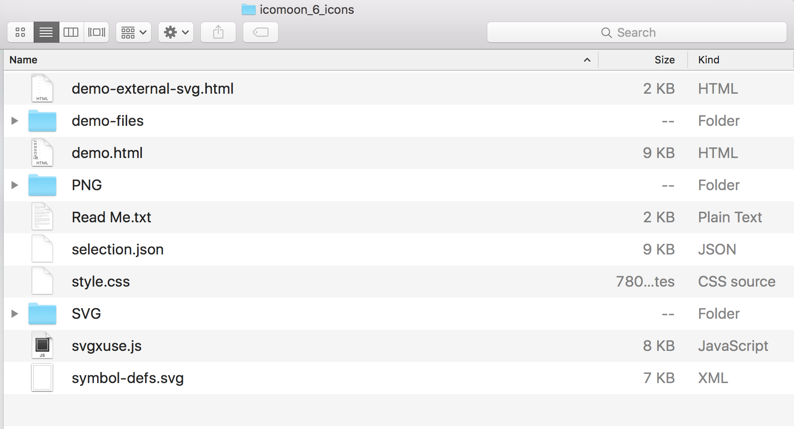
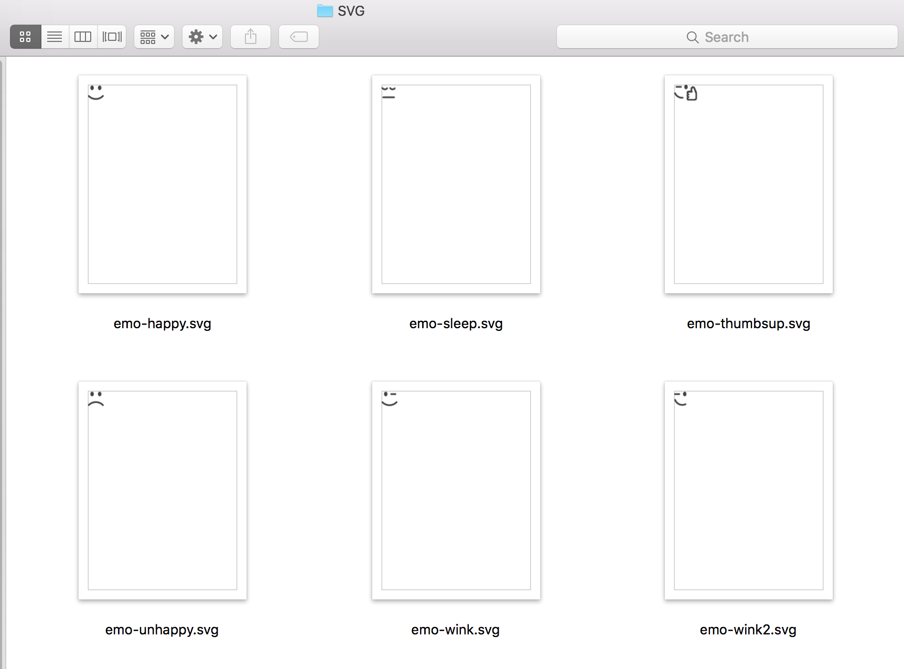

If you’re reading this article, then I can probably assume you’ve already decided to switch from using fonts for icons to an SVG icon system. Or maybe you're pondering the idea and want to get an overview of how that would be done and whether or not it's worth it. Either way, this post is here to help you with that.
If you’re not already convinced as to why SVG is a better icon system, then I highly recommend reading this article—a cagematch-style comparison between icon fonts and inline SVG for icon systems. Many companies and organizations including Github have already made the switch to SVG, and have written great articles explaining why they found SVG to be a better alternative. I’ve listed some articles at the end of this post for further reading.
Making the Switch
1. Grab your icon fonts files.
Font icons are font glyphs. They’re part of a web font and are thus defined in web font files and formats.
I don’t usually use icon fonts, so for the sake of demonstration, I headed to Fontello.com—an online icon font generator—to create an icon font that I can work with for this blog post. I picked a few icons and then generated an icon font and downloaded it.

Fontello generates a folder containing a demo page showing you how to display the icons on your own page and what class names to use.
Among the generated files is the actual font used to define the icons. The font files are available inside a font folder.
These are the files you need to proceed. We’re going to be using these files to “extract” the icons and convert them to SVG.
2. Choose your tool.
To convert the icons to SVG, we can use one of the following tools:
- fontello-svg: “a command-line tool to generate the SVG versions of a Fontello icon set, with a corresponding CSS file.”
- font-blast: “You can use font-blast to extract icons from any icon font - Font Awesome, Foundation, anything from Fontello etc.”
- Icomoon app: a web app for generating and creating icon sets in both SVG and icon font formats.
I’m sure there might be more tools to do this, but these are the ones I know about.
I’m going to be using Icomoon and font-blast in this article because they’re general tools that can be used with any font and are not restricted to just one. Both fontello-svg and font-blast are used pretty much the same way, and you can find extra information about fontello-svg in the Github repository’s Readme.
3. Convert the font icons to SVG icons.
3.1. Using Icomoon
To convert the font icons to SVG icons using Icomoon, we first need to upload them.

Your font icons will be available as an icon set in the app. The next steps are the same steps you would take if you were choosing from the set of already-available icons on the page:
- Select the icons you want to download as SVG.
- Click the Generate SVG & More button.

Like Fontello, Icomoon generates a folder containing the icons you generated, along with a demo page showing you how they can be used on your own pages.

The icons you’ve converted to SVG are available in the SVG folder.

There is one SVG file for every icon. The set is ready to be embedded in your page.
But before embedding the icons, you might want to sprite them. That is, create one SVG sprite that contains all of the icons, and then use that sprite to display each icon at a time, wherever needed on the page. Icomoon conveniently generates an SVG sprite (symbol-defs.svg) for you along with a polyfill (svgxuse.js) for older browsers that don’t support external sprite references.
3.2. Using font-blast
To convert the font icons to SVG icons using font-blast you need to first install font-blast using npm via your terminal.
$ npm install font-blast -g
The -g flag (short for global) ensures that you can run the script anywhere on your computer, regardless of the installation root.
As mentioned in the font-blast documentation, “You can generate icons from the command line by called the script with two parameters: the SVG file of the font, and the directory where inidivual icons should be placed”:
$ font-blast [svg-font-file] [destination-dir]
My command looked like this:
font-blast /Users/Sara/Downloads/fontello-08cdd41f/font/fontello.svg /Users/Sara/Downloads/fontello-08cdd41f/svg-icons
Tip: You can drag your folder into the terminal, which will sort of drop the path to that folder into the terminal, so you don’t have to manually write it or grab it and then copy-paste it.
Running the above command, font-blast retrieves the icons from the font files and creates an SVG icon for each one, and saves the result to the folder you specify in the command line. My terminal then looks like this:
The svg-icons folder I chose for the generated files looks like this:
As you have guessed, the SVG folder contains the generated SVG icons:
The icons are then ready to be embedded on your page.
4. Sprite, Embed, Style, Animate, Have fun!
There are three main ways to create and use SVG sprites. I wrote an overview of these techniques here. We will explore each of these techniques in more detail in an upcoming article (or a series of articles), show the pros and cons of each one, and how to create and use the SVG sprites, so stay tuned.
You can subscribe to the RSS feed of my blog to stay up-to-date with new articles. An e-mail newsletter is in the works too!
Recommended Reading:
- Inline SVG vs Icon Fonts [CAGEMATCH] — a must-read that clearly highlights the advantages of SVG and why it’s a superior icon system format.
- Seriously, Don’t Use Icon Fonts
- Seriously, Use Icon Fonts — I still recommend using SVG for icon systems, but it’s always good to read a different point of view.
- Delivering Octicons with SVG on the Github blog
- Ten reasons we switched from an icon font to SVG